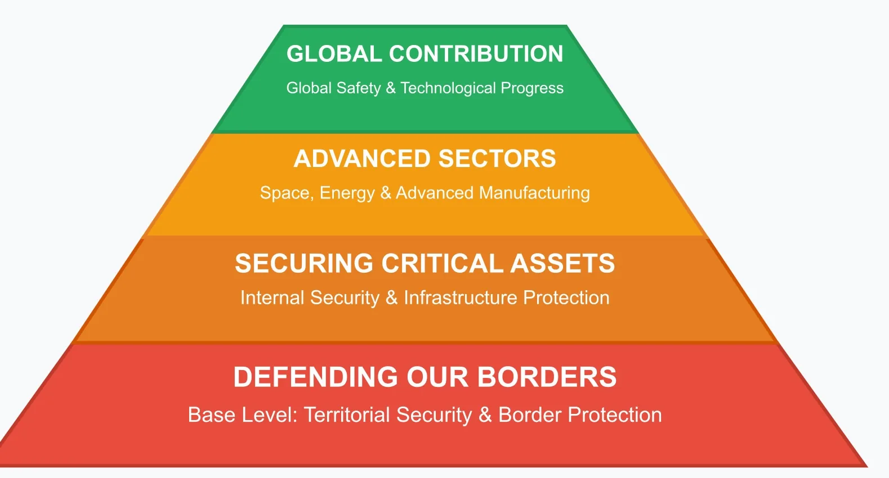

Peace Through Power: India's Defence Tech Moment
June 25, 2025
The recent Pahalgam incident, followed by renewed tensions at our borders, has once again made something abundantly clear: India must urgently invest in next-generation defence technologies. While we rightfully salute the bravery, professionalism, and decisiveness of our armed forces and leadership, we must also confront a sobering reality that our adversaries are preparing faster, building smarter, and thinking longer-term.
India, one of the world's oldest and most enduring civilizations, has withstood centuries of invasions and attempts to break its spirit. But what we are defending today is far more than just territory. We are protecting a culture rooted in free thought, and peaceful coexistence which is at the moment the face of human development.
We need a new generation of Indian technologists, scientists, founders, and visionaries who see defence not as the sole responsibility of the state, but as a shared national mission. People who can push the boundaries of robotics, AI, satellite systems, autonomous platforms, and dual-use technologies, built not for conquest, but for deterrence, disaster response, rescue, civilian safety, and even space exploration.
Let's not forget the broader economic and societal impact of such endeavours. The benefits of defence innovation ripple outward, spurring R&D, generating jobs, and strengthening the industrial backbone of the nation. In fact, our priorities can be thought of as a kind of civilizational Maslow's hierarchy:

A civilizational hierarchy of priorities
Our enemies must understand that any act of aggression will be their greatest strategic miscalculation. To ensure this, India must create an ecosystem that empowers our own 'Lucky Palmers', i.e., brilliant minds who make warfare so technologically asymmetric that conflict becomes a fool's errand.
We must build to win. Not to provoke but to prevail. Every single time.
This is India's defence tech moment, a moment to align our scientific excellence, entrepreneurial energy, and civilizational values to build a safer, stronger, and more sovereign future for ourselves, and for the world.